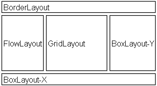

Border layout places components
in positions based on a constrain defined in the component. The component
may have one of 5 positions: north, south, east, west or center.
North/south components are sized based on the component's preferred height
and their width grabs the available space. East and west components do the
exact oposite of that.
The center component grabs up all remaining space to capture the rest of
the screen by default unless absolute center is checked in which case it
will be placed in its preferred size in the center (assuming there is
enough space, it will not disturb the other components). Notice that
if there is not enough room for components in north/south/east/west they
might overlap each other producing an underiable effect.
Border layout allows swapping component position on orientation change by selecting an alternative position for a component in landscape. When this feature is used the position constraint within the layout is assumed to mean portrait mode (phone standing up) and the user can define how landscape mode changes that behavior.